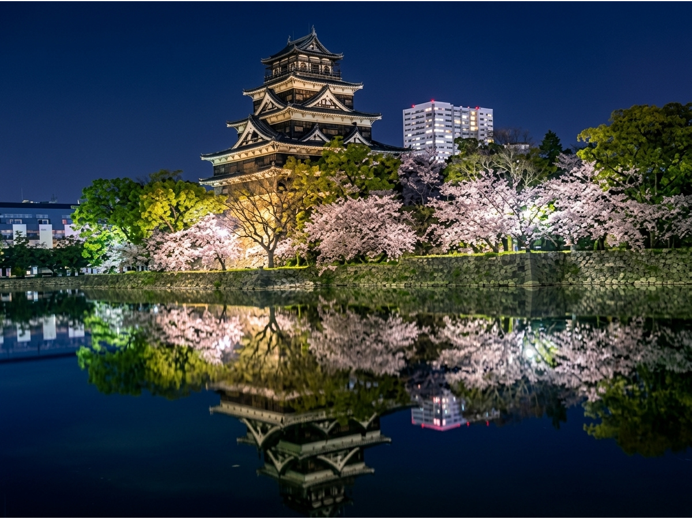
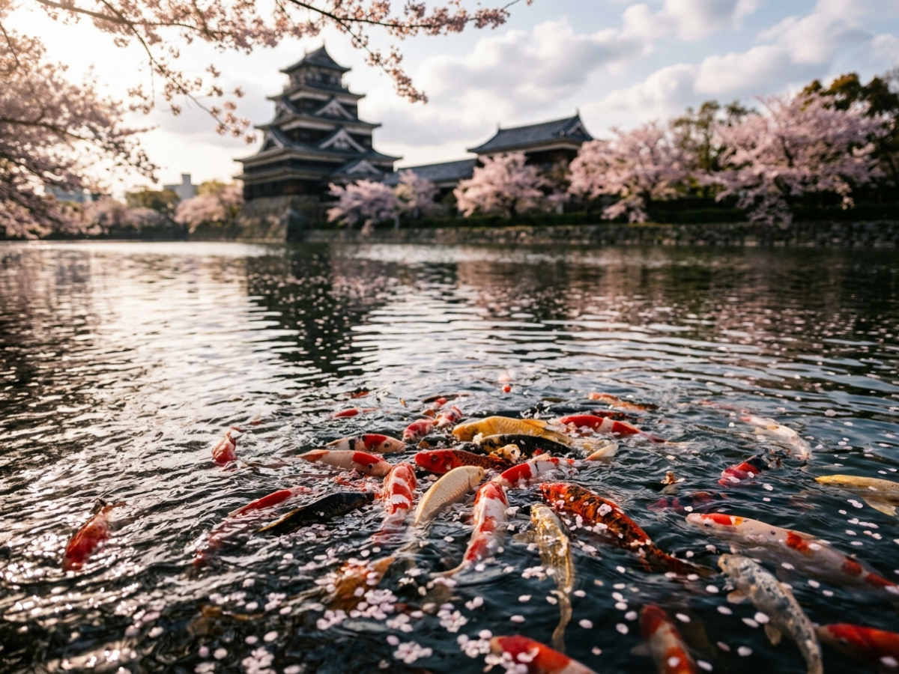

Hiroshima Castle – And the Layers Hidden Beneath Its Silhouette
Every April, cherry blossoms drift across the wide moat like soft, gently falling snow. Carp swim gracefully on the calm surface, and the castle tower, standing atop the weathered stone walls, rests quietly against the sky.
It feels serene. Timeless.
But when I finished this poster, I realized something—
there was a story that could not be contained within the frame.

A quiet surface that reflects more than it reveals.
A Castle Built on a Delta, a Crossroads of Power
Hiroshima Castle was built at the end of the 16th century on a vast delta where several rivers met the sea.
This location was no accident.
It was ideal for trade, movement, and control.
A castle town quickly formed, and for over two centuries, this place became the political and cultural center of the region.
The castle changed hands many times.
Each transition carried a message—
this was never just a structure.
It was power, constantly redefined.
The Day the City Changed Forever
In the summer of 1945, everything changed.
A single weapon erased centuries in an instant.
The wooden keep collapsed.
Most of the buildings disappeared.
What remained were stone, scars, and water.
The moat reflected a different sky.
From that moment on,
neither the city nor the castle would ever return to what they once were.

Life continues quietly, even where history has been broken.
The City Chose Reconstruction
More than a decade later, a decision was made.
The castle tower would rise again.
Not as it once was,
but as something that could exist in the present.